class: center, middle # Class imbalance and Metric Learning Charles Ollion - Olivier Grisel .affiliations[    ] --- ## Classic Deep Learning data setup - Classification with a single label per sample - 2-1000 classes ; 1000+ samples per class -- ### Real life problems What if I have multiple classes per sample? -- What if I have unbalanced or noisy labels? -- What if I have 1M classes and 10 samples / class? ??? class imbalance: frequent for fraud anomaly detectionxs --- ## Outline ### Multi-labeling and Sampling strategies -- ### Metric Learning and siamese networks -- ### Triplet Loss and advanced techniques --- class: middle, center # Multi-labeling and Sampling strategies --- ## Dealing with Imbalance Many real-life datasets are imbalanced, e.g. **anomaly detection**: (binary classification, most of the data is normal, very few points are anomalies) -- The training process may fail if most batches have only a single class in them You may use **oversampling**, **importance weighting** of minority classes / samples, to help the optimization process. In Keras: -- ```python # build your own batches and add weights model.train_on_batch(self, x, y, class_weight=None, sample_weight=None) ``` -- Evaluation must be very rigorous (the test set should represent the **true distribution** of data and labels) ??? Binary imbalance, try to build batches with 1/3 of the minority class and 2/3 majority --- ## Multilabel classification Build a **binary classifier for each class** but with shared activations on hidden layers. Easily adapted from classic classification: ```python # ... x = Convolution2D(2048, 3)(x) x = GlobalAveragePooling2D()(x) x = Dense(1000, activation="softmax")(x) ``` ??? Know any system we already talked about which is multilabel? _Object detection such as Fast RCNN is multilabel!_ --- ## Multilabel classification Build a **binary classifier for each class** but with shared activations on hidden layers. Easily adapted from classic classification: ```python # ... x = Convolution2D(2048, 3)(x) x = GlobalAveragePooling2D()(x) x = Dense(1000, activation="sigmoid")(x) ``` Replace `softmax` with `sigmoid` (output activation) Replace `categorical_crossentropy` with `binary_crossentropy` (loss) -- $y^{true}$ is a binary vector corresponding to classes present in the image (many-hot encoding). -- **Problem** : costly to label images exhaustively for ALL possible tags --- # Weak supervision .center[ 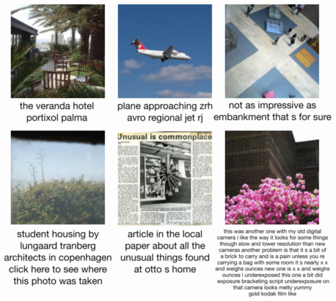 ] .footnote.small[ Joulin, Armand, et al. "Learning visual features from large weakly supervised data." ECCV, 2016 ] -- - **Output dimension** (vocabulary) is huge: ~100 000 -- - After stopword removal, **importance sampling** of positive labels -- - Do not compute the full softmax, **randomly sample negatives** ??? Useful as tagging system or representation learning used in production at Heuritech to pretrain models --- # Weak supervision .center[ 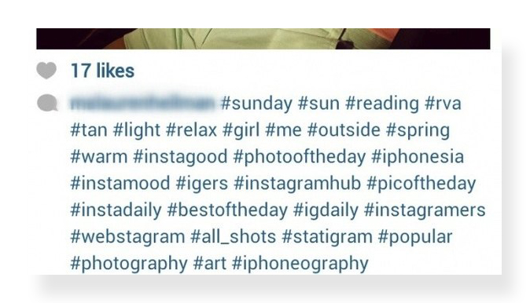 ] .footnote.small[ Mahajan, Dhruv, et al. "Exploring the Limits of Weakly Supervised Pretraining." Technical Report, 2018 ] -- - Facebook trained a ResNet on Instagram's hashtags - Very noisy labels, most don't represent the image content -- - The model fine-tuned on ImageNet reached the best accuracy --- ## Inference tricks You may train with a **softmax**, and do multilabel inference with a **sigmoid** .footnote.small[ Garrigues, P., Farfade, S., Izadinia, H., Boakye, K., & Kalantidis, Y. (2016). Tag prediction at flickr: a view from the darkroom. NIPS workshop on large scale CV 2016 ] -- Fine tune the **output bias** parameter on a small by **fully labeled** dataset Score reflects the posterior of a tag being present in an image, e.g. $p(dog|image)$ -- Measure **precision/recall** per class on a fully labeled test set. ??? output score is **Interpretable**: it should **Consistent across tags:** a score of 0.8 for “cat” classifier ~ same meaning as score of 0.8 for the “flower” classifier (while no guarantee) Impossible to measure a correct precision / recall on the weak dataset This is what we use at Heuritech for multilabeling --- class: middle, center # Metric Learning & Siamese networks --- ## Few Examples per class ex: Face Recognition/Verification -- .center[ <img src="images/lfw.png" style="width: 500px;" /> ] - **Recognition:** given a face, classify among K possible persons - **Verification:** verify that two faces belongs to the same person -- A verification system can be implemented as a similarity measure. If it's really good, useful for recognition. ??? - **Recognition:** multi-class classification. Model cannot predict identities unseen in the training set. - **Verification:** binary classification on pairs of faces. Can generalize to identities unseen in the training set. Not necessary to retrain the full model to handle new identities. --- ## Learning a distance function We want to build $d_{\theta}( x_1, x_2 )$ which indicates degree of difference between images -- We define a threshold $T$ such that if $d_{\theta}( x_1, x_2 ) < T$, we consider $x_1$ and $x_2$ to be of the same class (e.g. identity) -- **Not a real distance** (no guarantee for triangle inequality) -- <br/> **Mahalanobis distance Metric Learning** may be used to build distances, but are limited to linear projections, which won't be enough for fine-grained image analysis .footnote.small[ Weinberger, Kilian Q., John Blitzer, and Lawrence K. Saul. "Distance metric learning for large margin nearest neighbor classification." Advances in neural information processing systems. 2006. ] ??? not a real distance, but we just want a semantic proxy of a distance --- ## Learning a distance function $$ d\_{\theta}( x\_1, x\_2 ) = || f\_{\theta}(x\_1) - f\_{\theta}(x\_2) ||\_2 $$ -- $f_{\theta}$ is typically a CNN which outputs a fixed dense $\mathbb{R}^d$ representation of the image. $f_{\theta}$ maps image space to an **isometric representation space** where a simple metric (e.g. euclidean distance) represents **semantic distance**. -- For other problems (sound, NLP), different networks may be used (CNN with 1D convolutions, RNNs, ...) which output a fixed dimension vector representing each input element. -- Training $f_{\theta}$ is also called **representation learning** ??? Euclidean distance directly in the space of pixels is not a good proxy: very dependant for instance of lighting conditions or pose --- ## Siamese networks .center[ <img src="images/siamese.svg" style="width: 500px;" /> ] .footnote.small[ Chopra, Sumit, Raia Hadsell, and Yann LeCun. "Learning a similarity metric discriminatively, with application to face verification." CVPR 2005. ] ??? Build a loss function, and propagate to the two branches. Updated with the sum of gradients from the two branches --- ## Loss function .center[ 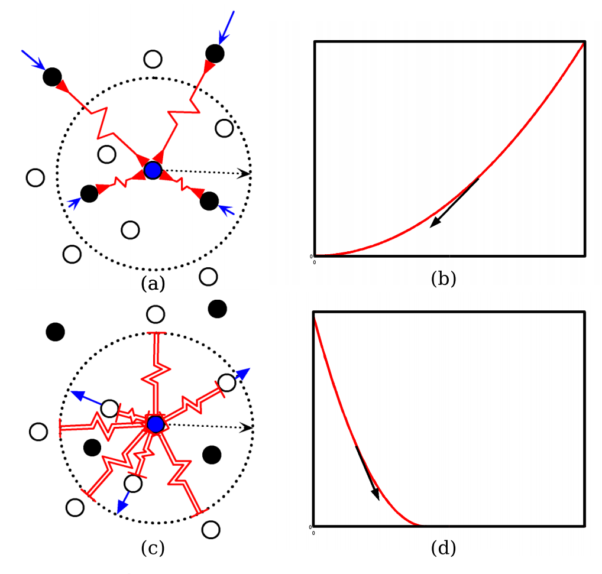 ] **Contrastive loss:** Pushes together same class pairs, and further away different class ones, up to a margin. $L_\text{contrastive}(Y, D) = \frac{1}{2}(1 - Y)D^2 + \frac{1}{2}Y\max(0, m - D)^2$ .footnote.small[ Chopra, Sumit, Raia Hadsell, and Yann LeCun. "Learning a similarity metric discriminatively, with application to face verification." CVPR 2005. ] --- ## Alternative loss functions Can derive equivalent contrastive loss for cosine similarity: $$cosine(f\_{\theta}(x\_1), f\_{\theta}(x\_2))$$ -- Alternatively, **absolute difference + Binary classification**: $$y = sigmoid ( \mathbf{w} \cdot |f\_{\theta}(x\_1) - f\_{\theta}(x\_2)| + b)$$ ??? difference is a vector -- Also, **concat + Binary classification** $$y = sigmoid ( \mathbf{w} \cdot f\_{\theta}(x\_1) || f\_{\theta}(x\_2) + b)$$ -- <br/> Simpler:regression after cosine similarity --- ## Training - sample positive pairs $(x_i, x_j)$, with $(i, j)$ of same class - sample negative pairs $(x_i, x_j)$, with $(i, j)$ of different classes .footnote.small[ Taigman et. al., 2014. DeepFace closing the gap to human level performance ] -- Forward pass using both inputs through the two networks (**same parameters**, **different activations**) -- Backpropagate through the two networks (the weights are updated with the **sum of the two gradients**) -- Important to **craft batches carefully** (balance positive and negative, group positives together). Many negatives are *easy* (closer than margin) & don't contribute to the loss. ??? better to group pairs rather than pick random positive and negatives Can be tricky to train, sensible on input --- ## Dataset Face verification **Labeled Faces in the Wild (LFW)** 13,000 pictures, 1680 identities with at least 2 pictures -- - results http://vis-www.cs.umass.edu/lfw/results.html - DeepFace: 0.9735 binary classification accuracy .footnote.small[ Taigman et. al., 2014. DeepFace closing the gap to human level performance ] -- **YouTube Faces Database** 3,425 videos of 1,595 different people averaging 181 frames per video --- ## Cars196, CUB200, Online Products .center[ 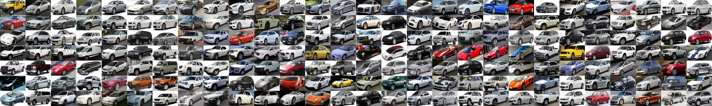 ] 16,185 images of 196 classes of cars -- .center[ 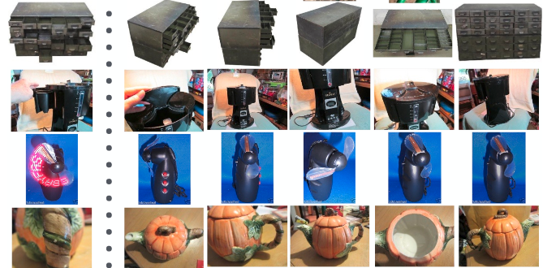 ] 120,053 images, 22,634 Online Products (classes) from eBay.com. 5.3 images per class ??? Typically any dataset with large number of classes Any classification dataset (but softmax classification can be better) --- class: middle, center # Triplet Loss --- ## Triplet Loss A triplet: $(x^a, x^{+}, x^{-})$ - an anchor image - a positive image (same person as anchor) - a negative image (different person as anchor) We compute $f_{\theta}$ for each of these 3 images -- We want that: $||f(x^a) - f(x^{-})||_2 \geq ||f(x^a) - f(x^{+})||_2$ -- $||f(x^a) - f(x^{-})||_2 - ||f(x^a) - f(x^{+})||_2 \geq \alpha$ $\alpha$ **margin** typically small positive number $(0.2, 0.5, \cdot)$ -- **minimize** $||f(x^a) - f(x^{+})||_2 - ||f(x^a) - f(x^{-})||_2 + \alpha $ ??? Although we did not a do direct comparison to other losses, e.g. the one using pairs of positives and negatives, as used in [14] Eq. (2), we believe that the triplet loss is more suitable for face verification. The motivation is that the loss from [14] encourages all faces of one identity to be projected Z onto a single point in the embedding space. The triplet loss, however, tries to enforce a margin between each pair of faces from one person to all other faces. This allows the faces for one identity to live on a manifold, while still enforcing the distance and thus discriminability to other identities. --- ##Triplet Loss $l(x^a, x^{+}, x^{-}) =$ $max(||f(x^a) - f(x^{+})||_2 - ||f(x^a) - f(x^{-})||_2 + \alpha, 0)$ .footnote.small[ Schroff et al.,2015, FaceNet: A unified embedding for face recognition and clustering ] -- **Training** - Sample a minibatch of triplets $\\{(x^a, x^{+}, x^{-})_i\\}$ - Forward pass on all 3 networks using $f_{\theta}$ - Compute $\sum\_i l((x^a, x^{+}, x^{-})\_i)$ -- - Compute the gradients through the 3 networks - update $f_{\theta}$ using the sum of 3 gradients ??? Also, L2 normalization of embeddings --- ## Hard negative sampling After a few epochs, If $(x^a, x^{+}, x^{-})$ are chosen randomly, it will be easy to satisfy the inequality. -- Gradient in one batch quickly become almost $0$ except for **hard cases**. Random sampling is inefficient to find these hard cases -- - **Hard triplet sampling:** sample $x^{-}$ such that: $||f(x^a) - f(x^{+})||_2 > ||f(x^a) - f(x^{-})||_2 + \alpha$ - **Semi Hard triplet sampling:** sample $x^{-}$ such that: $||f(x^a) - f(x^{+})||_2 > ||f(x^a) - f(x^{-})||_2$ --- ## Hard negative sampling .center[ 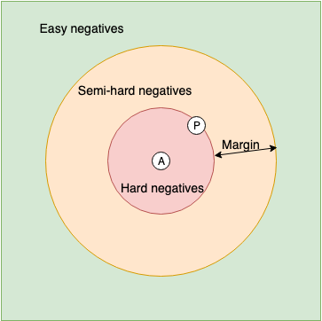 ] - **Hard triplet sampling:** sample $x^{-}$ such that: $||f(x^a) - f(x^{+})||_2 > ||f(x^a) - f(x^{-})||_2 + \alpha$ - **Semi Hard triplet sampling:** sample $x^{-}$ such that: $||f(x^a) - f(x^{+})||_2 > ||f(x^a) - f(x^{-})||_2$ --- ## Triplets results .center[ 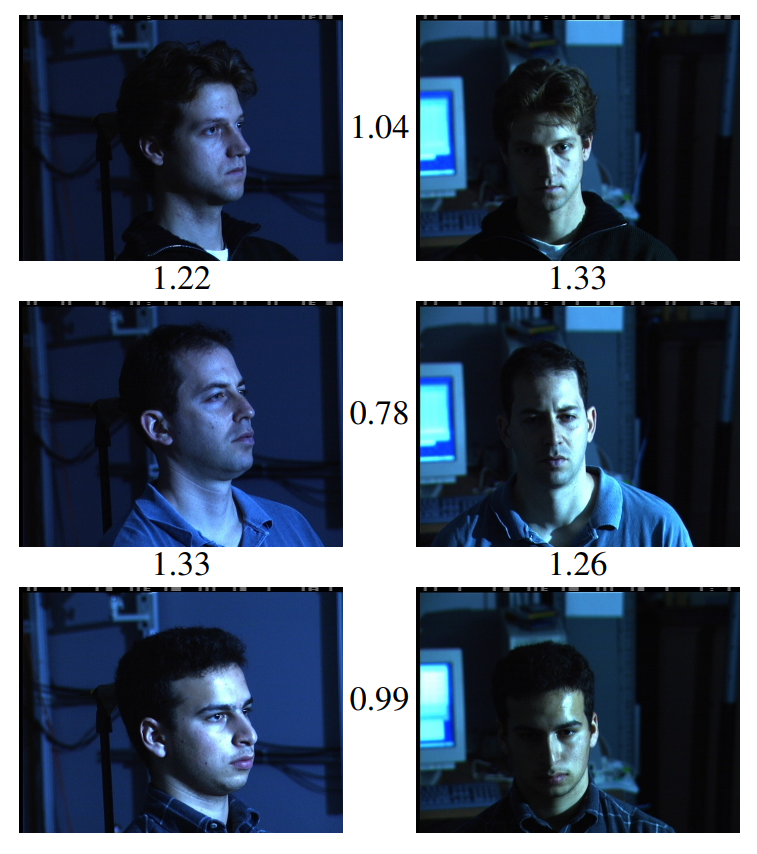 ] .footnote.small[ Schroff, Florian, et al. Facenet: A unified embedding for face recognition and clustering, CVPR 2015. = hard negative mining and semi hard ] -- - A threshold is computed on test set ($1.2$) - Best model achieves 99.6% verification accuracy on LFW - Face alignment is critical! ??? Each line is a different identity (label) First 3 images can be seen as a hard triplet Face recognitoin: achieves a validation rate of 87% at false rate 0.001% --- ## Quadruplet loss .center[ 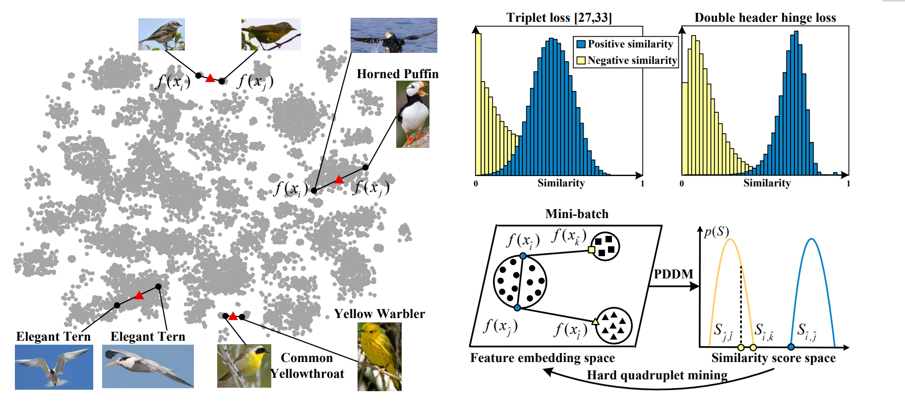 ] .footnote.small[ Huang, Chen, et al. Local similarity-aware deep feature embedding, NIPS 2016 ] -- **intraclass distance** in a high-density region may be larger than the **interclass distance** in low-density regions --- ## Quadruplet loss .center[ ] .footnote.small[ Huang, Chen, et al. Local similarity-aware deep feature embedding, NIPS 2016 ] Position-Dependent Deep Metric (PDDM) depends on two points + position of mean (red triangle) --- ## Quadruplet loss .center[ ] .footnote.small[ Huang, Chen, et al. Local similarity-aware deep feature embedding, NIPS 2016 ] Sample a hard quadruplet $(i,j)$ most dissimilar positive sample, and $k$ and $l$ are hard negatives --- ## N-pair loss .center[ 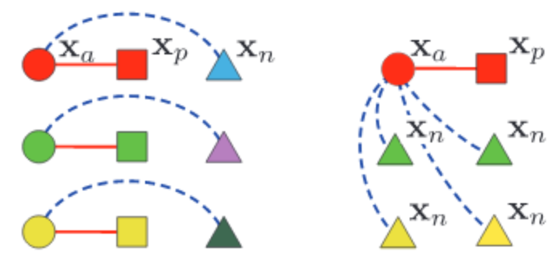 ] .footnote.small[ Sohn, Kihyuk. "Improved Deep Metric Learning withMulti-class N-pair Loss Objective", NIPS 2016 ] - Generalization of triplets to n-uplets - Samples pair of similar examples, negatives are all other samples in the batch --- ## Histogram loss .center[ 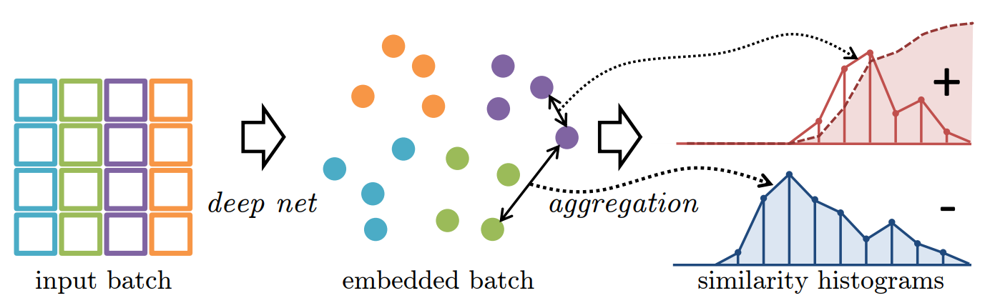 ] Compute all the **positives similarities** and **negatives similarities** within a batch .footnote.small[ Ustinova, Evgeniya, et al. Learning deep embeddings with histogram loss, NIPS 2016 ] -- The loss pushes to **seperate** the two similarity distributions (needs to be differentiable) -- Sample classes **intelligently** to have representative enough distributions --- ## Results .center[ 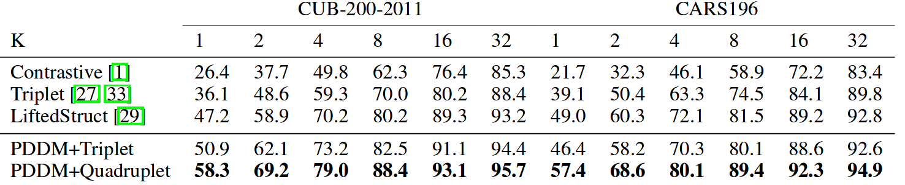 ] Metric: **Recall @K** -- .center[ 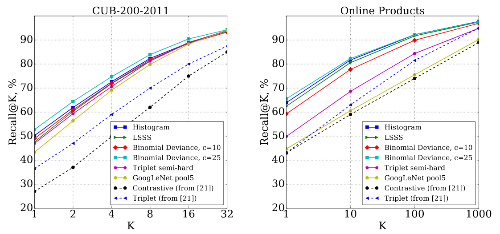 ] -- ImageNet pretrained is competitive! ??? recall @K: Rank all images by similarity to an input image ; is an image of similar class within the first K images --- ## Getting started Available open source implementations / pretrained models: - Openface https://cmusatyalab.github.io/openface/ - FaceNet https://github.com/davidsandberg/facenet - DeepFace Commercial recognition systems are trained on a large datasets like 10/100 million images -- **Deploying Verification models** e.g. Iphone FaceID: Beforehand, precompute representations of your 10 photos -- At test time, compute representation of the photo, then compute similarities with the 10 representations If a similarity is within a predefined threshold then Unlock! --- ## Take Aways on classification - For most cases, use a **classifier with softmax** - If you have many classes, and/or strong class imbalance use **representation learning** - both can give useful embeddings for clustering / low shot learning -- - Use **ImageNet pre-trained features** in most cases - Ongoing research on learning *weakly* supervised features: cover larger spectrum of image domains -- Use of **simulations** for generating data esp localisation / segmentation data (GTA V...) ??? refs Y. Movshovitz-Attias et al. No fuss distance metric learning using proxies, NIPS 2017 = using proxies + NCA -- sota? K. Sohn. Improved deep metric learning with multi-class N-pair loss objective, NIPS 2016 = use multiple negatives instead of one triplet H. Oh Song, et al. Deep metric learning via lifted structured feature embedding, CVPR 2016 = using all possible examples & relations in batch - online products O. Rippel, et al. Metric learning with adaptive density discrimination. Arxiv preprint, 2015 = magnet loss, clustering and neighborhood Ustinova, Evgeniya, et al. Learning deep embeddings with histogram loss, NIPS 2016 = full batch, seperate positives from negatives distributions (KL divergence, histogram bins) Huang, Chen, et al. Local similarity-aware deep feature embedding, NIPS 2016 = similar to previous, but using quadriplets Schroff, Florian, et al. Facenet: A unified embedding for face recognition and clustering, CVPR 2015. = hard negative mining and semi hard --- class: middle, center # Lab 09: back here in 15 min!